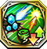
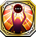

Harmonia RS
Resonance Skills obtained from Lost Ragnarok units of the Harmonia Pontificate faction. Can only be use by Special units and Harmonia units.
3300413

Amenonuboko 天沼矛 |
サハクィエルの領域 |
|---|---|
| 自身のHPが80上昇し、自身および周囲3マス以内の味方ユニットの物防・魔防が10上昇する。対象が飛行・竜属性の場合はさらに10上昇する | |
3400313

Apollon アポロン |
ラドゥエリエルの賛辞 |
| クエスト開始から2ターンの間、封印・麻痺耐性を持つ ※この耐性はデュエル時以外の封印・麻痺に対しても効果を発揮する | |
3100913

Balmung バルムンク |
 フレイヤの精彩
フレイヤの精彩
|
| 1ターンの間、敵軍全ユニットの運を35下降させる | |
3500413

Brahmastra ブラフマーストラ |
 アリエルの賛助
アリエルの賛助
|
| クエスト開始から4ターンの間、コマンドスキルによるパラメータ減少を反転する | |
|
3102613
Caladbolg カラドボルグ |
 レリエルの先導
レリエルの先導
|
| 光属性ユニットへ与えるダメージが80%増加するが、光属性ユニットから受けるダメージが30%増加する | |
3602513

Chalice カリス |
 アザゼルの供物
アザゼルの供物
|
| 自身を除く、味方ユニット1体のコマンドスキルの使用回数を1回分回復する。さらにHP50%分回復する | |
|
3602523
Chalice カリス |
 アザゼルの贈物
アザゼルの贈物
|
| 自身を除く周囲3マス以内の味方ユニットの麻痺を治癒する。さらに2ターンの間、デュエル時に100%の麻痺耐性を付与する | |
5602513

Chalice カリス |
 アザゼルの願望 |
| 氷属性ユニットへ与えるダメージが80%増加するが、風属性ユニットから受けるダメージが30%増加する | |
|
46025001
Chalice カリス |
天使は元気一杯お腹一杯 |
| 周囲2マス以内の全ユニットに1ターンの間、麻痺を付与する。また、自身には2ターンの間、麻痺を付与する | |
3201613

Cita シタ |
 メタトロンの洞察
メタトロンの洞察
|
| 自軍全ユニットのHPが50、力・魔・守・精が2上昇する ※自軍に同じスキルを装備しているユニットが多いほど、重複して効果が発動する | |
|
3201623
Cita シタ |
 メタトロンの近侍
メタトロンの近侍
|
| 自身の力が25上昇し、攻撃時、35%の確率で1ターンの間麻痺を付与する | |
3102813

Dainsleif ダーインスレイヴ |
 マリクの信実
マリクの信実
|
| 風属性ユニットへ与えるダメージが80%増加するが、氷属性ユニットから受けるダメージが30%増加する | |
3400413

Eros エロース |
 ハニエルの賛美
ハニエルの賛美
|
| 1ターンの間、自身および周囲3マス以内の味方ユニットの命中率を100%にする | |
3101113

Excalibur エクスカリバー |
セラフィエルの忠節 |
| 光・闇属性に与えるダメージが30%増加する。炎属性ユニット装備時、HPが100上昇する | |
3301813

Forcas フォルカス |
ウリエルの神炎 |
| 自身のHPが200上昇し、物攻・物防・魔防が10上昇する | |
3301823

Forcas フォルカス |
 ウリエルの聖光
ウリエルの聖光
|
| 自身のHPが200上昇する。デュエル時、自身が有利属性の場合、与えるダメージが35%上昇する。さらに隣接する敵ユニットとのデュエル時、物攻が35上昇する | |
3101013

Fragarach フラガラッハ |
 イオフィエルの連行
イオフィエルの連行
|
| クエスト開始から2ターンの間、行動不可耐性を持つ ※この耐性はデュエル時以外の行動不可に対しても効果を発揮する | |
3500213

Freikugel フライクーゲル |
アズラエルの宣告 |
| 自身の魔が25上昇し、攻撃時、35%の確率で1ターンの間麻痺を付与する | |
3500223

Freikugel フライクーゲル |
 アズラエルの招魂
アズラエルの招魂
|
| クエスト開始から2ターンの間、忘却・挑発耐性を持つ ※この耐性はデュエル時以外の忘却・挑発に対しても効果を発揮する | |
3100813

Gram グラム |
 フレイの天恵
フレイの天恵
|
| クエスト開始から3ターン目までの間、自軍フェーズ開始時に、自身のHPが100%回復する | |
3202013

Harpe ハルパー |
 ゼルエルの勇武
ゼルエルの勇武
|
| 自身のHPが80上昇し、敵ユニットをすり抜けて移動することができる。さらに自身から攻撃を仕掛けたデュエル時、相手の物防を20下降させる | |
3200313

Labrys ラブリュス |
カマエルの偶像 |
| HPを30%消費し、周囲7マス以内の敵ユニット全員を対象に、コマンドスキルによって付与された「全パラメータ上昇」効果を解除する ※HP30%以下の場合は使用できない | |
3300113

Longinus ロンギヌス |
 ガブリエルの福音
ガブリエルの福音
|
| 自身および周囲3マス以内の味方ユニットのHPを20%回復し、2ターンの間、90%の毒・麻痺耐性を付与する | |
3300123

Longinus ロンギヌス |
 ガブリエルの誓告
ガブリエルの誓告
|
| 自身および周囲3マス以内の味方ユニットのHPを20%回復し、2ターンの間、90%の幻惑・行動不可耐性を付与する | |
3200513

Mitum ミトゥム |
 サンダルフォンの聖歌
サンダルフォンの聖歌
|
| HPが100上昇し、HP減少値に応じて物防・魔防が上昇する ※最大でHPが30%以下の時、25%上昇する | |
3100613

Naglering ナーゲルリング |
 ラグエルの静観
ラグエルの静観
|
| 周囲5マス以内の敵ユニット1体に付与された、コマンドスキルの効果を2ターンの間無効にする | |
3200813

Perun ペルーン |
 マスティマの統率
マスティマの統率
|
| 自身の物攻が20上昇する。さらに自軍フェーズ開始時、自身および周囲3マス以内の味方ユニットのHPを最大HPの10%分回復する | |
3302013

Pisear ピサール |
サマエルの不運 |
| 1ターンの間、周囲3マス以内の敵ユニット1体の運を100%下降させる | |
3300913

Seiryuengetsutou 青龍偃月刀 |
ザドキエルの公正 |
| 炎属性ユニットへ与えるダメージが80%増加するが、雷属性ユニットから受けるダメージが30%増加する | |
3400713

Shekinah シェキナー |
 ラファエルの純白
ラファエルの純白
|
| 射程1の攻撃が可能になるが、射程1での攻撃時、自身に追撃が発生しづらくなり、相手に追撃が発生しやすい ※弓ユニット以外が装備した場合は発動しない | |
3400723

Shekinah シェキナー |
 ラファエルの寄贈
ラファエルの寄贈
|
| 闇属性ユニットへ与えるダメージが80%増加するが、闇属性ユニットから受けるダメージが30%増加する | |
3503113

Solomon ソロモン |
 アテナの知略
アテナの知略
|
| 1ターンの間、選択したユニットに追撃が発生する効果を付与する ※相手が追撃を封じるスキルを所持している場合は追撃が発生しない | |
3503123

Solomon ソロモン |
アテナの梟眼 |
| 自身のHPが200上昇し、ディスラプターズユニットとのデュエルサポート発生時、命中・必殺が20上昇する | |
3503133

Solomon ソロモン |
 アテナの宣誓
アテナの宣誓
|
| 炎・風・雷・氷属性に与えるダメージが15%増加する。光属性ユニット装備時、HPが100上昇する | |
5503113

Solomon ソロモン |
 アテナの栄光
アテナの栄光
|
| クエスト開始から2ターンの間、出血・忘却耐性を持つ ※この耐性はデュエル時以外の出血・忘却に対しても効果を発揮する | |
45031001

Solomon ソロモン |
 ふくよか最適解
ふくよか最適解
|
| 周囲2マス以内の全ユニットに1ターンの間、付与スキル封印を付与する。また、自身には2ターンの間、付与スキル封印を付与する | |
3503213

Tiphereth ティファレト |
 ミカエルの天秤
ミカエルの天秤
|
| 防御時に50%の確率で発動。敵から受けるダメージを50%軽減する。ティファレト装備時、相手がケイオスリオン帝国ユニットの場合、受けるダメージを70%軽減する | |
3503223

Tiphereth ティファレト |
 ミカエルの慶祝
ミカエルの慶祝
|
| 自身を含む周囲3マス以内の味方ユニットの出血・忘却を治癒し、HPを最大HPの20%分回復する | |
5503213

Tiphereth ティファレト |
 ミカエルの守護
ミカエルの守護
|
| ティファレト装備時のみ発動。自身のHPが1000、守・精が50、運が20上昇する | |
|
45032001
Tiphereth ティファレト |
空腹救済宣言 |
| ゴッドキラーズが装備した時、速・運が100%下降し、クエスト開始から2ターンの間、物防・魔防が500上昇する | |
3302413

Tonbokiri 蜻蛉切 |
 インドラの仁恵 |
| 自身を含む周囲5マス以内の味方ユニット1体の封印を治癒する | |
3601114

Vanargand ヴァナルガンド |
サリエルの牢獄
|
| 自身の魔攻が20上昇する。さらに自軍フェーズ開始時、自身および周囲3マス以内の味方ユニットのHPを最大HPの10%分回復する | |
3601123

Vanargand ヴァナルガンド |
 サリエルの看守
サリエルの看守
|
| 自身のHPが150上昇し、隣接する敵ユニットとのデュエル時、自身の魔・技が10%上昇する | |
|
5601113
Vanargand ヴァナルガンド |
 サリエルの邪視
サリエルの邪視
|
| クエスト開始から3ターンの間、自身から攻撃を仕掛けたデュエル後、与えたダメージの30%分、自身のHPを回復する |